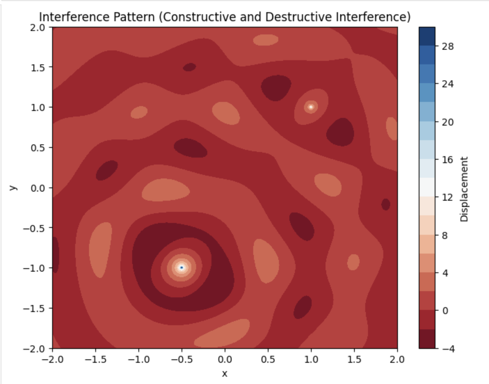

Problem 1
Interference Patterns on a Water Surface
1. Theoretical Background
Wave Interference
Interference occurs when two or more waves overlap, leading to constructive (amplification) and destructive (cancellation) effects. On a water surface, waves emanating from multiple sources interact to form intricate interference patterns.
The displacement \( \eta(x, y, t) \) of a circular wave originating from a point source \( (x_0, y_0) \) is given by:
where: - \( A \) is the wave amplitude, - \( k = \frac{2\pi}{\lambda} \) is the wave number, - \( \omega = 2\pi f \) is the angular frequency, - \( r = \sqrt{(x - x_0)^2 + (y - y_0)^2} \) is the radial distance from the source, - \( \phi \) is the initial phase.
When multiple sources are present, the net displacement is given by:
where \( N \) is the number of sources.
2. Problem Setup
1. Choosing a Regular Polygon
We select a regular polygon (e.g., equilateral triangle, square, pentagon) and place wave sources at its vertices.
2. Computing the Superposition
Each vertex of the polygon acts as a wave source, and their combined effect determines the final interference pattern.
3. Computational Model
The following Python script simulates and visualizes the interference pattern.
import numpy as np
import matplotlib.pyplot as plt
# Define wave parameters
A = 1 # Amplitude
lambda_ = 10 # Wavelength
k = 2 * np.pi / lambda_ # Wave number
omega = 2 * np.pi # Angular frequency (arbitrary unit)
t = 0 # Time snapshot
# Define polygon vertices (square as an example)
N = 4 # Number of sources (square)
radius = 20 # Distance from center
angles = np.linspace(0, 2 * np.pi, N, endpoint=False)
sources = [(radius * np.cos(a), radius * np.sin(a)) for a in angles]
# Define grid for visualization
x = np.linspace(-30, 30, 300)
y = np.linspace(-30, 30, 300)
X, Y = np.meshgrid(x, y)
# Compute wave interference pattern
eta_sum = np.zeros_like(X)
for x0, y0 in sources:
R = np.sqrt((X - x0)**2 + (Y - y0)**2)
eta_sum += A / np.sqrt(R + 1e-6) * np.cos(k * R - omega * t) # Avoid division by zero
# Plot the interference pattern
plt.figure(figsize=(8, 6))
plt.imshow(eta_sum, extent=[-30, 30, -30, 30], cmap='coolwarm', origin='lower')
plt.colorbar(label='Wave Amplitude')
plt.scatter(*zip(*sources), color='black', label='Wave Sources')
plt.legend()
plt.title('Interference Pattern for a Square Wave Source')
plt.xlabel('X Position')
plt.ylabel('Y Position')
plt.show()

4. Observations and Analysis
- Constructive Interference: Bright regions indicate where wave crests reinforce each other.
- Destructive Interference: Dark regions indicate cancellation due to phase differences.
- Polygonal Symmetry: The interference pattern reflects the symmetry of the chosen polygon.
5. Conclusion
This simulation demonstrates how waves from multiple sources interact to form interference patterns. By varying the polygon shape and wave parameters, we can analyze different wave behaviors useful in acoustics, optics, and fluid dynamics.